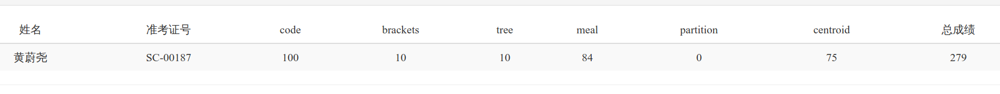

2019 CSP-S 考挂总结
挂分原因
首先总结一下挂分原因。直接原因是没有对拍，因为没有意识到大样例太弱，而且写了一个容错率不高的东西，细节没有考虑到，也只手模了一次小的数据，因此算法实现错误导致挂分。
总结一下整场考试的发挥。Day1 除了 T2，以及在 T3 上花费太长时间以至于没有巩固 T2，其他都发挥正常。Day2 开场 1 个半小时写了 T1 的 84 分，耗时有点长。其实思路是半个小时就想好的，但一直在想搞正解所以磨蹭了很久。开 T2 的时候才发现是一道贪心题，15 分钟写了 64 分做法。开 T3，发现和徐州站 ACM 的一题很像，因此按当时的做法写了一个换根 DP。Day2 的算法除了 T2 的贪心之外，T1 计数、T3 轻度数据结构，容错率较高，并且大样例相对较强，因此没有挂分。
整场的问题是由心态导致的。考场策略在考前是定下来的，但是考场上的心态让我总是想杠正解，于是浪费了一些时间，也因此挂分。不稳。
虽然我可能失去了宝贵的机会，但失落之余，我认为这不全是坏事。它激发我拼命训练的斗志。
学习总结
心态总结完，接下来总结一下算法知识的情况。
目前，大部分省选算法都有所涉猎，有些算法没有实现但有所耳闻。接下来需要进行算法专题的讲解并配套训练，然后就是在模拟赛中积累更多套路。
按照之前的大纲，具体的学习情况如下：
- 平衡树已经掌握，但遇到的有难度的题目较少，做的题大多是不动脑子的码题；
- LCT 学过，但不熟悉，做题较少；
- 树剖的套路见得少；
- 可持久化数据结构之前掌握过，现在有点生疏；
- AC 自动机，后缀数组，SAM，PAM 生疏；
- 不平等博弈目前一窍不通；
- 计算几何一窍不通；
- 网络流建模讨论见得少；
- 长链剖分、斯特林数、仙人掌、单位根反演未学习
- 模拟退火等骗分算法没学
计划
其中部分内容，可以通过 Scape 哥哥的视频课学习。其他内容，在正睿的课件中也多有讲述。我认为这不要紧，最应该考虑的是制定一个可执行的高效计划，来学习省选算法。
我认为当前的学习日志方法有一定的缺陷。最直观的感受就是，每次打开文档的速度越来越慢（虽然这不可避免）当然，另一方面就是逐渐出现不更新日志的情况。
学习日志主要是记录我们学习的内容，但是没有对将要学的内容做规划，因此容易让人逐渐产生惰性。
我想再维护一个日程表（共享 Excel 文档），用于给未来的日程做规划。最常用的场合就是给接下来的一周做规划。这样整个团队预先知道自己的任务，心态上就会做好准备，效率会更高。如果总结的内容不多，可以把学习日志直接合并到这个 Excel 里。
然后就是任务分配的计划。之前的训练缺乏计划性，每天早上才开始想今天该学啥，导致进度较慢。但如果用力过猛，计划就无法长久坚持。
因此思考下来，我觉得可以将一周分成三种日程：
- 轻量级任务，通常安排在周一，周三，周五；
- 重量级任务，安排在周二，周四，周六；
- 全天休息，周日
轻量级任务：学视频课、按列表刷题、打 CFvp、学文化课等。还有一个就是，可以把上周拖欠的任务放到下周的轻量级日程中。
重量级任务：省选模拟赛、大码量题的训练、学习数论知识等。
每天的总结在当日完成，不拖到星期天。计划是可变的，但宗旨是劳逸结合。
总结
「把一件好事变成更好的事，不是一个人的本事；把一件坏事变成更坏的事，也不是一个人的过失；但能把一件坏事变成好事，那对这个人而言是善莫大焉。」我依稀记得初中班主任的语录，放在这里再适合不过。
有一个小插曲，就是学校的教练得知我的训练情况后，建议我找比我大一届的水平比我高的学长来一起训练。但是我回复她说，这样训练没有问题。虽然没有水平高我一大截（高爸）的 OIer 长时间带我，但是我有一群志同道合的伙伴。尽管我在团队中年龄最大，机会最少。但在经历了这两个月的训练与这次教训，我更清楚地认识到这个团队的可贵。做大佬的舔狗真的没意思，OI 界能找到的真心朋友少之有少。说到底，带领这个团队一起向前是我想做的。不论走多远，结果怎样。好歹我还是旷了几个月文化课，不亏不亏。
这几天一个人在家里，发生了这样那样的事情，又不得不接收，其实蛮自闭的。真的就应了我说的那句，「OI 的世界，只允许我们笑里藏泪」。调整好状态，以前所未有的信念迎接接下来的训练。我的目标说起来很简单，虽然也很中二，就是成为一个稳的黄队。
迷迷糊糊写完了。因为还在调整状态可能观感不佳，谅解
悲愤的故事仍继续着。成绩出来了，279。

D2T2，MLE。
4e7，4 个 LL 就爆了。考场上没注意。关键是那个评测机是一开始就直接开满内存。所以直接 MLE。
真 TM 悲愤
把这次耻辱记在这里了。
然后就是，感谢网易云的日推，很治愈。
感谢关心。
让往事随风去吧。这样才能凤凰涅磐。
修订记录
- 2021年7月30日 第2次修订
- 2019年11月20日 创建文章